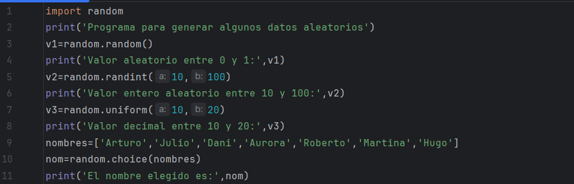

Hablar de módulos frecuentes no tiene mucho sentido puesto que se usan los módulos en función de las tareas que se quieren hacer, por lo tanto, la expresión módulos comunes sólo va a tener sentido en el ámbito de la aplicación que le daremos, que en nuestro caso es un uso académico en los niveles básicos.
Módulo math
El módulo math es parte de la biblioteca estándar de Python y contiene varias funciones para realizar operaciones matemáticas avanzadas. A diferencia de las operaciones matemáticas básicas que puedes realizar directamente en Python, como sumar, restar o multiplicar, el módulo math te proporciona acceso a funciones matemáticas especializadas que normalmente no están disponibles de forma predeterminada.
Podemos encontrar una amplia descripción de cada una de las funciones y constantes que incluye este módulo en la documentación de Python.
La librería math pone a disposición algunas constantes como son los números pi y e.
La forma de acceder a ellas es anteponiendo el nombre del módulo, es decir, math.pi y math.e nos dará los valores que observamos en la imagen:
Algunas de las funciones a las que podemos acceder son:
- math.pow(): se utiliza para elevar un número a una potencia específica. A diferencia del operador **, esta función siempre devuelve un número flotante.
- math.sqrt(): determina la raíz cuadrada de un número.
- math.trunc(): elimina la parte decimal de un número, devolviendo solo la parte entera.
- math.floor(): redondea un número hacia abajo al entero más cercano.
- math.ceil(): redondea un número hacia arriba al entero más cercano.
- math.fabs(): para obtener el valor absoluto de un número.
- math.sin(): calcula el seno de un ángulo (en radianes).
- math.cos(): calcula el coseno de un ángulo.
- math.tan(): calcula la tangente de un ángulo.
- math.exp(): calcula el valor de e elevado a una potencia dada.
- math.log(): calcula el logaritmo natural (base e) de un número.
- math.log10(): Calcula el logaritmo en base 10 de un número.
Módulo random
El módulo random nos permite disponer de herramientas para la generación de resultados aleatorios dentro de nuestros programas.
El uso de valores aleatorios es algo muy frecuente en la programación puesto que permite que el programa reaccione de diferentes formas ante una misma situación. Estas herramientas son fundamentales en la elaboración de juegos, simulación de escenarios, pruebas, generación de datos, etc.
Veamos con un ejemplo algunas de las funciones que resultan útiles dentro del módulo random:
- random.random(): genera un número decimal aleatorio entre 0 y 1.
- random.randint(a,b): genera un número entero aleatorio entre a y b.
- random.uniform(a,b): genera un número decimal aleatorio entre a y b.
- random.choice(conjunto): elige un elemento del conjunto pasado como argumento.
Ejemplo: vamos a hacer un programa que genere un número decimal entre 0 y 1; un número entero entre 10 y 100; un número decimal entre 10 y 20; y por último elija un nombre de una lista de nombres que le pasaremos como parámetros.

Módulo time
El módulo time nos va a servir para manejar fechas, horas, medir tiempos, etc.
Generalmente en la mayoría de los programas es necesario introducir datos relacionados con el momento, la fecha o la hora en el que se producen determinados actos. Para estas ocasiones podemos usar este módulo que aunque tiene muchas opciones, las más comunes las vamos a utilizar en los siguientes ejemplos.
Vamos a hacer un programa que mostrará la fecha y hora en diferentes formatos.
A continuación vamos a desarrollar un programa que nos pida introducir una palabra y nos indique el tiempo que hemos tardado en introducir la palabra.

En algunas ocasiones queremos nuestro programa espere un determinado tiempo, por ejemplo cuando mostramos alguna infomación, es posible que sea necesario dar tiempo al usuario para leerla.
Dentro del módulo time, disponemos de una función muy útil para este tipo de tareas, se trata de la función sleep(). A esta función hay que indicarle mediante un parámetro, el número de segundos que deseamos que espere:
sleep(2), esperará 2 segundos para continuar con la ejecución del programa.
Módulo datetime
Dentro de las librerías estándar de Python también tenemos otro módulo que nos permite gestionar fechas de una forma un poco más fácil, este es el
módulo datetime.
Este módulo pone a disposición varios objetos (clases) que disponen de muchas características, se trata de datetime.date, datetime.time y datetime.datetime.
Tanto el objeto date, como el datetime disponen del método today().
- datetime.date.today(): nos suministra la fecha actual.
- datetime.datetime.today(): nos suministra la fecha y la hora actual.
- weekday(): devuelve un valor numérico que indica el día de la semana teniendo en cuenta que 0=lunes, 1=martes, 2=miércoles, 3=jueves, 4=viernes, 5=sábado y 6=domingo